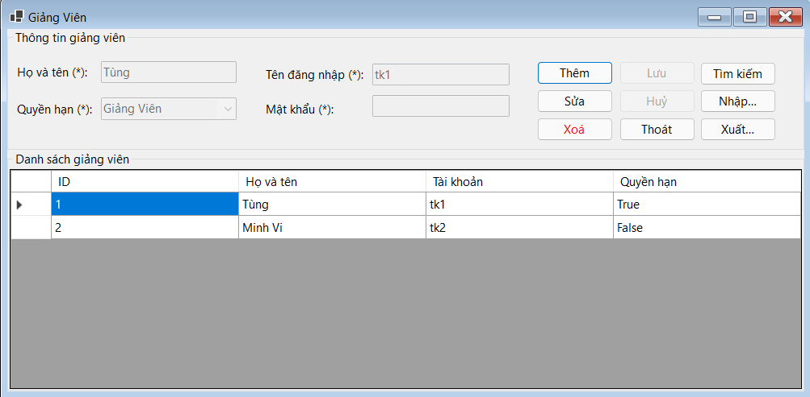

Hướng dẫn sử dụng màn hình Giảng viên.
Cách dùng: Chọn Dữ liệu: Nhấp chuột vào hàng trong DataGridView để chọn giảng viên cần sửa hoặc xóa, sửa Dữ liệu: Chọn hàng, nhấn Sửa, chỉnh sửa thông tin và nhấn Lưu, xóa Dữ liệu: Chọn hàng, nhấn Xóa và xác nhận, cập nhật DataGridView: Sau mỗi thao tác, nạp lại dữ liệu để cập nhật thông tin mới nhất.
Bước 1: Nhấn nút "Thêm".
Bước 2: Các ô nhập liệu sẽ được kích hoạt (txtHoVaTen, txtTenDangNhap, txtMatKhau, cboQuyenHan).
Bước 3: Nhập thông tin vào các ô nhập liệu.
Bước 4: Nhấn nút "Lưu" để lưu thông tin mới.
Bước 1: Chọn dòng muốn sửa trong dataGridView.
Bước 2: Nhấn nút "Sửa".
Bước 3: Các ô nhập liệu sẽ được kích hoạt và hiển thị thông tin của dòng đã chọn.
Bước 4: Sửa đổi thông tin cần thiết.
Bước 5: Nhấn nút "Lưu" để lưu thay đổi.
Bước 1: Chọn dòng muốn xóa trong dataGridView.
Bước 2: Nhấn nút "Xóa".
Bước 3: Xác nhận xóa khi hộp thoại xác nhận xuất hiện.
Bước 4: Nếu đồng ý, dòng sẽ được xóa khỏi danh sách.
Bước 1: Sau khi nhấn nút "Thêm" hoặc "Sửa" và nhập/sửa thông tin, nhấn nút "Lưu".
Bước 2: Nếu thao tác thêm mới, thông tin sẽ được thêm vào danh sách.
Bước 3: Nếu thao tác sửa, thông tin sẽ được cập nhật.
Lưu ý: Nếu không nhập thông tin hoặc nhập không đúng định dạng, sẽ có thông báo lỗi.